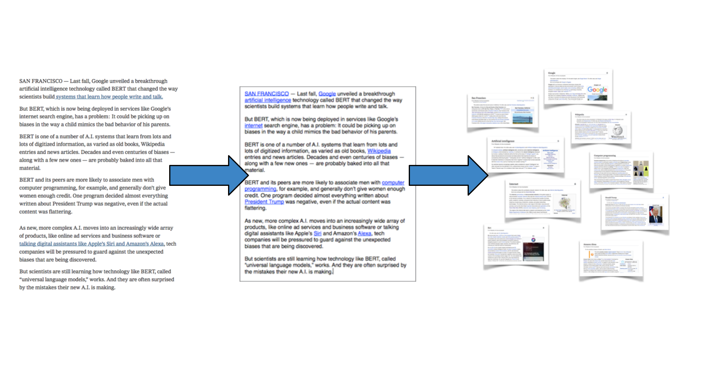

I've always found it a bit shocking that something like Wikipedia — an astounding compendium of human knowledge — is not more integrated into our daily lives. It wasn't until recently that Google search even incorporated Wikipedia articles into their search results. There's no way, at the moment, to augment your life — and the things you see and read — with the additional layer of information offered by something like Wikipedia
In order to fix this problem, I've begun building Minerva. The goal is to surface relevant knowledge automatically and naturally, without having to explicitly search for something.
By leveraging state-of-the-art neural NLP techniques, Minerva is able to use a Naive Bayes Classifier to solve a problem the local Disambiguation to Wikipedia problem in a way that is simple, elegant, and fast enough to run in a web browser.
>>>
Phase 1: Disambiguation to Wikipedia (complete!)
In order to do this, I use a Naive Bayes Classifier that relies on rich pre-trained embeddings and precomputed probabilities. Passing over the entirety of Wikipedia, I first computed probabilities for occurrences of links to articles, as well as specific surface forms linking to specific articles. I also resolved the redirect graph. Then, using learned word embeddings, I computed an average local context for every instance of a link to an article. At runtime, for a given surface form that the classifier is trying to link to some article, we uses the precomputed probabilities as well as a distribution computed from comparing context distances between candidate articles’ context embeddings.
Because all of this work is done prior to runtime, and because it gives an explicit formula for each candidate article score, inference is nearly instantaneous. I'll be experimenting with classifier tuning to see how this approach compares with standard benchmarks for the task. You can see the code that builds the classifier here.

Phase 1.2: Deep Learning
Next up, I'm going to move away from the naive bayes classifier to actually tune weights for the various parameters — title probability, surface link -> title probability, context embeddings — for a neural network classifier.